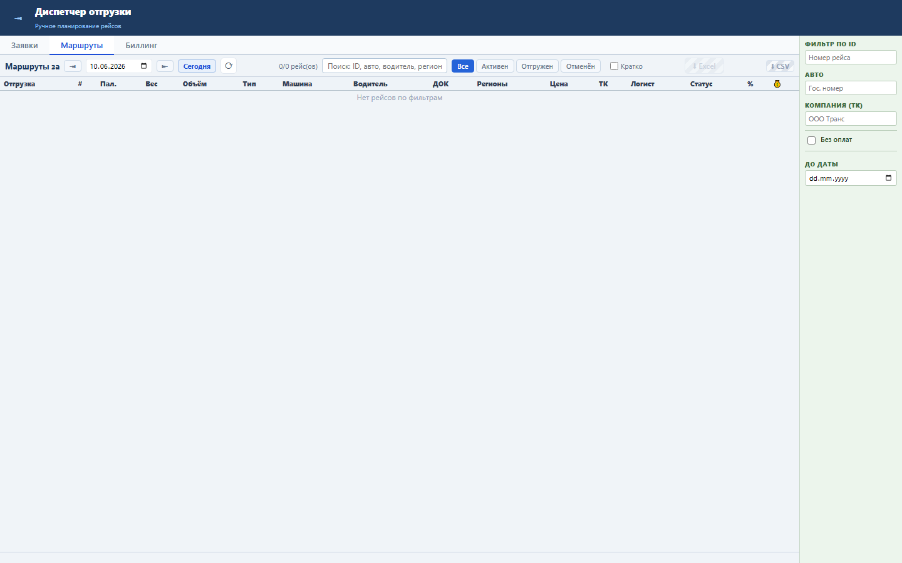
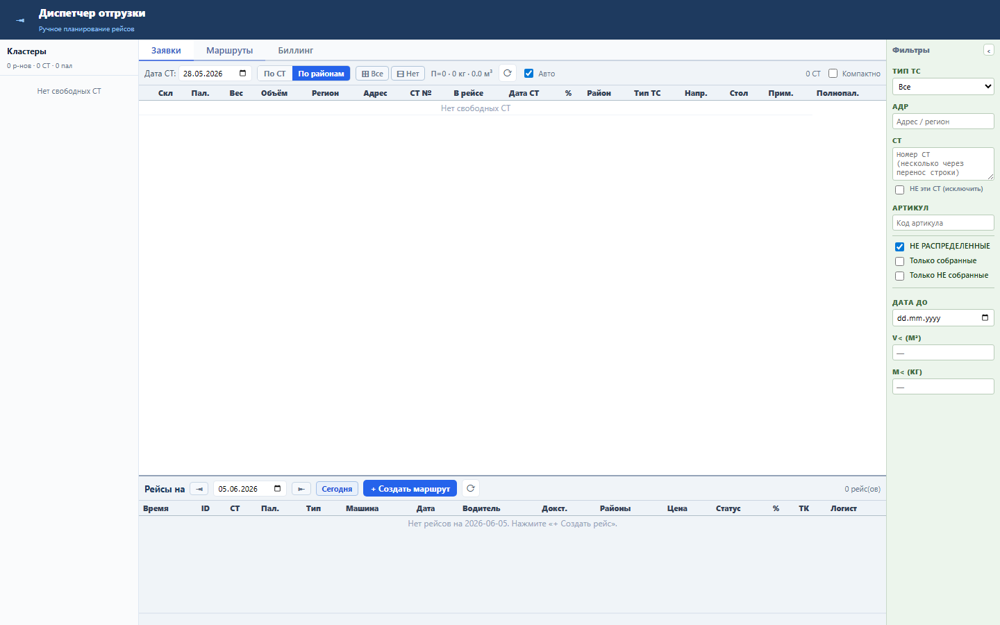

Блок сохраняет рабочий контекст диспетчера после перезагрузки страницы.
В localStorage сохраняются tms_filterDate, tms_routeShipDate, tms_viewMode, tms_activeTab. При ошибке storage UI возвращается к дефолтам.
После reload пользователь возвращается на выбранную вкладку, дату и режим отображения, а не начинает с чистого экрана.



Проверка: functional, UI smoke и load gate пройдены.